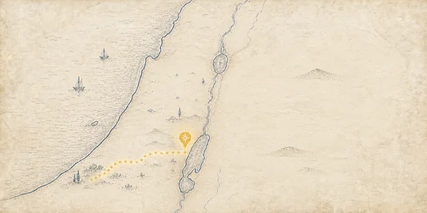
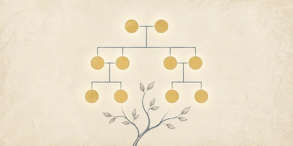
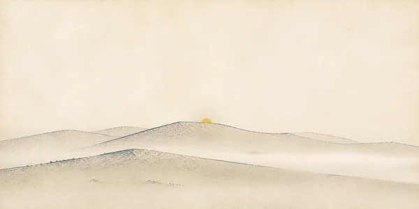
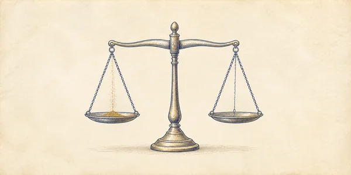
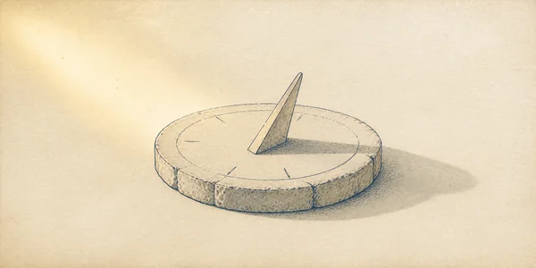
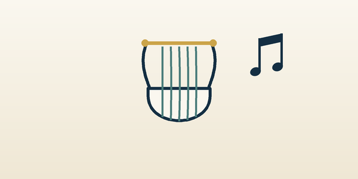
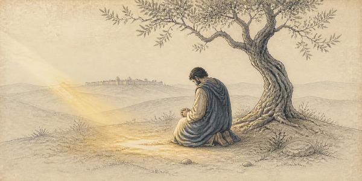
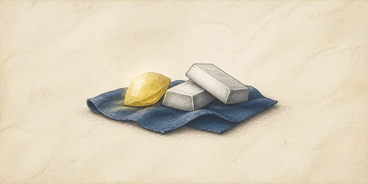
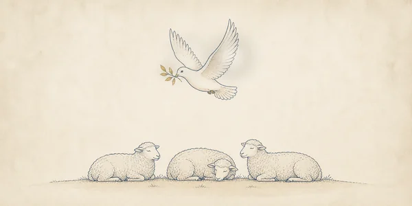
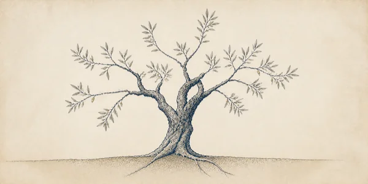

Naslag bij het lezen: waar het gebeurde, wie familie van wie was, en wat de woorden betekenen die wij niet meer dagelijks gebruiken. Kies een onderwerp.

De plaatsen van de Bijbel op de kaart: van Ur naar Kanaän, van Egypte naar de woestijn.
alle boeken
Personen uit alle 88 boeken, hun naamvormen, familieverbanden en vindplaatsen.
alle boeken
Hun oorsprong, stamvader, naamvormen, woongebied en de teksten waarin zij voorkomen.
start met AmmonLanden, streken en volken — en waar ze vandaag liggen.

Wat is een el, een efa of een sikkel — en hoeveel is dat vandaag? Met onzekerheidsmarge en bronvermelding.
bijbels · metrisch · imperiaal
Het derde uur, de vierde nachtwake: de Bijbelse klok begint bij zonsopgang. Omgerekend naar onze tijd.

Alle liederen van de Bijbel: van het lied bij de Schelfzee tot het nieuwe lied in Openbaring.
177 liederen
De grote gebeden van de Bijbel: van Abrahams voorbede tot het Onze Vader.
140 gebeden
Goud, zilver, goferhout, pek en bedolah: wat het is, waarvoor het diende en waar het voorkomt.
hele Bijbel
Van de slang in de hof tot de leeuw van Juda: de dieren en wat over ze verteld wordt.
hele Bijbel
Van de boom van het leven tot de wijnstok: het groen van de Bijbel.
hele BijbelVan Jubals harp en orgel tot de citers in Openbaring.
hele Bijbel